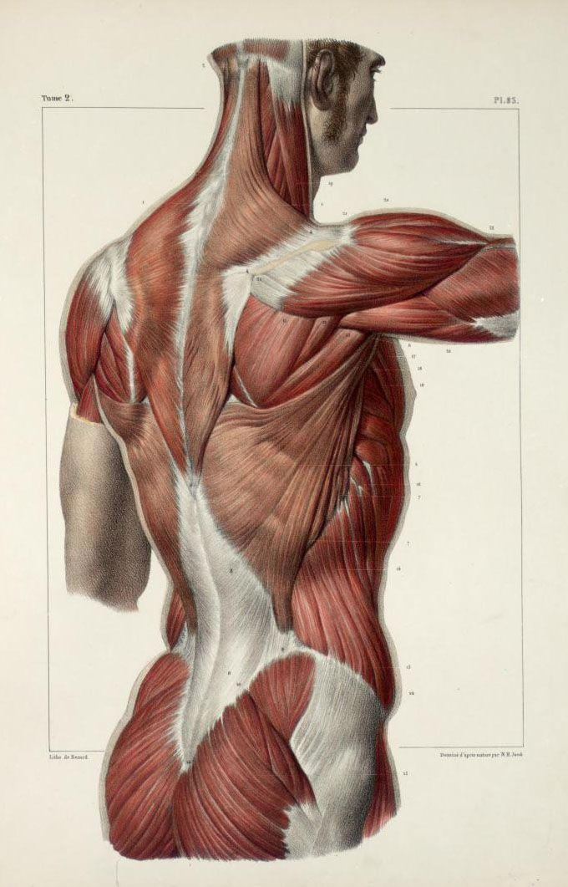
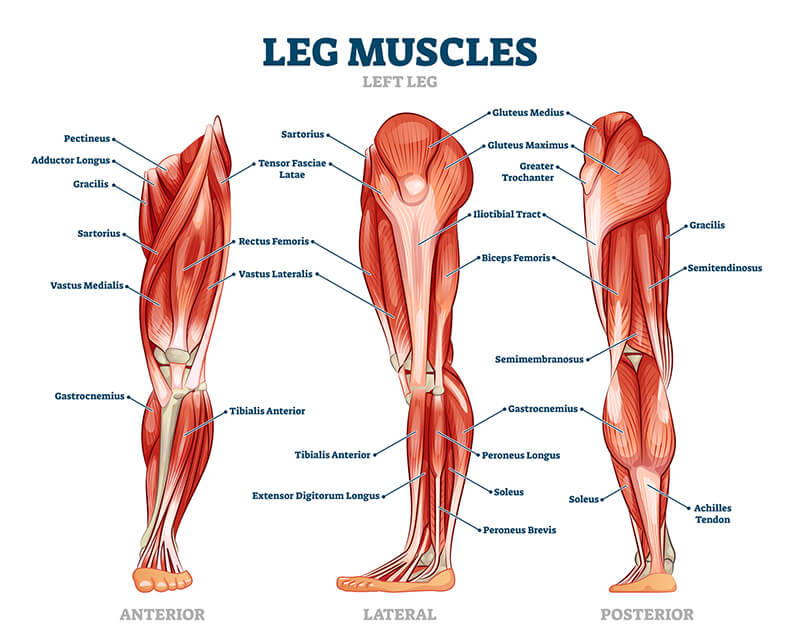

Esercizi per l'ipertrofia
Scopri i migliori esercizi per ogni gruppo muscolare!
PETTO
I muscoli pettorali sono un gruppo muscolare situato nella parte anteriore del torace. Il grande pettorale è il muscolo principale che conferisce volume e forma al petto, mentre il piccolo pettorale si trova al di sotto del grande pe'ttorale e contribuisce al movimento delle scapole. Il grande pettorale, in particolare, svolge un ruolo fondamentale nella flessione e nell’adduzione delle braccia, oltre a influenzare la postura complessiva del corpo. Grazie alla sua connessione con le ossa del braccio, quando si contrae durante l’allenamento, si verifica una spinta che porta al movimento delle braccia in avanti. Il piccolo pettorale, sebbene sia un muscolo più piccolo, ha la sua importanza nell’equilibrio muscolare e nella stabilizzazione delle scapole durante i movimenti delle braccia. Un piccolo pettorale forte e ben allenato può contribuire a una postura corretta e a un migliore allineamento del corpo.

Selezione degli esercizi pettorali
Nel cuore di un allenamento efficace per i pettorali sta la scelta degli esercizi appropriati che mirano a coinvolgere in modo specifico i muscoli pettorali. Vediamo alcuni degli esercizi pettorali più efficaci da includere nella vostra scheda allenamento:
SCHIENA
I muscoli della schiena sono i muscoli con sede nella porzione posteriore del tronco, tra il collo e i glutei. L'elenco dei muscoli della schiena include elementi noti, come il trapezio, il grande dorsale e i romboidi, ed elementi meno noti ma con un ruolo funzionale fondamentale, come gli erettori della colonna vertebrale. I muscoli della schiena contribuiscono al movimento di spalle, arti superiori, colonna vertebrale testa e collo; intervengono nella respirazione, in quanto innalzano e deprimono le costole; sono muscoli stabilizzatori e posturali.
Selezione degli esercizi per la schiena
Nel cuore di un allenamento efficace per la schiena sta la scelta degli esercizi appropriati che mirano a coinvolgere in modo specifico i muscoli della schiena. Vediamo alcuni degli esercizi per la schiena più efficaci da includere nella vostra scheda allenamento:

Trazioni alla sbarra

REmatore con manubrio

pulley basso
GAMBE
I muscoli della gamba sono i muscoli con sede totale o parziale nel compartimento scheletrico compreso tra la coscia e il piede e che include le ossa tibia e perone.
Gli anatomisti individuano nella gamba 13 muscoli: 6 muscoli flessori, 2 muscoli estensori, 2 muscoli adduttori e 3 muscoli abduttori. I muscoli della gamba contribuiscono a movimenti fondamentali per la locomozione. Nella fattispecie, concorrono a: plantarflessione, dorsiflessione, estensione della gamba e delle dita dei piedi, flessione della gamba e delle dita dei piedi, eversione del piede ed inversione del piede.
Selezione degli esercizi per i bicipiti
Allenare le gambe è doloroso. Anche questo è collegato al fatto che sono un gruppo muscolare grande: la nostra capacità di spremerci e di “andare oltre” è fortemente limitata rispetto a gruppi muscolare più piccoli.
Squat con squat-con-bilanciere

Affondi con manubri